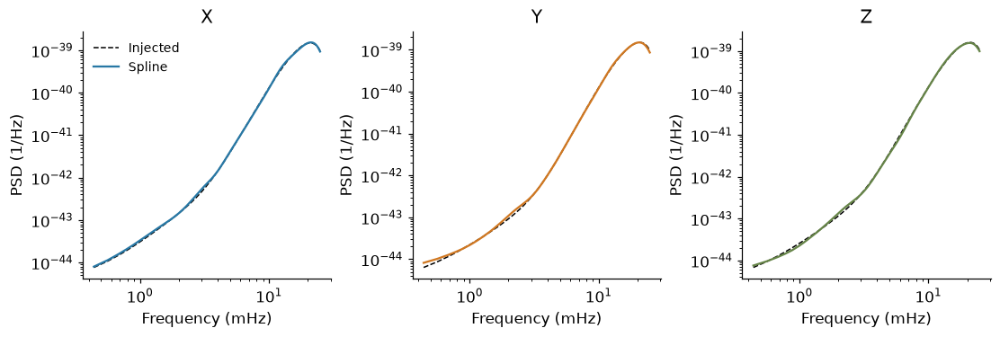
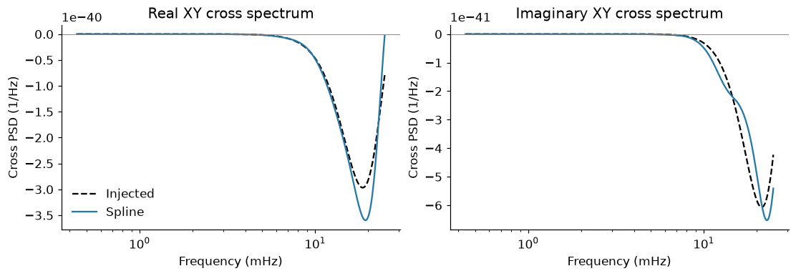
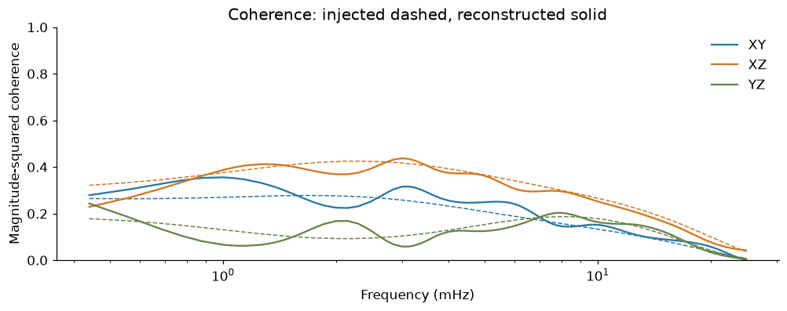
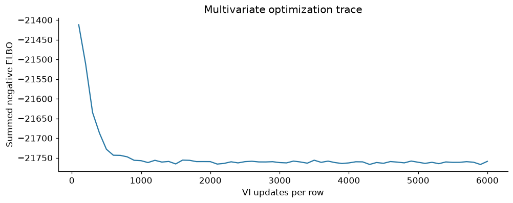

3. Estimate the XYZ spectral matrix#
Goal#
Fit the stationary XYZ time series from notebook 1 with the vanilla multivariate model in LogPSplinePSD. No parametric noise levels or reference correction are fitted in this lesson.
The method follows the inverse-Cholesky spline construction in Vajpeyi et al., arXiv:2607.04833. The pinned library marginalises Gaussian cross-channel coefficients. This walkthrough uses VI for a quick point reconstruction, rather than reproducing the paper’s NUTS uncertainty study.
Setup#
The input is the saved real time series, not simulated independent powers. We start below 25 mHz; the next lesson addresses moving response nulls across the full analysis band.
%matplotlib inline
import matplotlib.pyplot as plt
import numpy as np
import pandas as pd
from log_psplines import SpectralMatrix, StationaryConfig, TimeSeries, fit
from log_psplines.preprocessing.coarse_grain import CoarseGrainConfig
from lisa_case_studies.notebook_tools import COLORS, matrix_errors, style
from lisa_case_studies.tutorial_data import MatrixSimulation, load_data, workspace
style()
data = load_data("stationary_xyz")
series = TimeSeries(data["xyz"], data["time"])
Step 1 — Specify the multivariate spline#
The library writes \(S^{-1}=T^\dagger D^{-1}T\), with positive diagonal \(D\) and complex lower-triangular regression coefficients in \(T\). Splines model all nine real fields for three channels. Positive definiteness is built into the model; XYZ are not treated as independent.
Use eight non-overlapping Hann-tapered blocks, an adaptive frequency partition, and the same library prior used by its standard multivariate fit.
config = StationaryConfig(
method="vi",
Nb=8,
wishart_window="hann",
fmin=0.4e-3,
fmax=25e-3,
n_knots=18,
knot_kwargs={"method": "log"},
coarse_grain_config=CoarseGrainConfig(
enabled=True,
method="adaptive",
Nc=None,
tolerance=0.25,
max_bin_width=8,
pilot_window=31,
),
vi_steps=6000,
vi_lr=0.01,
vi_guide="mvn",
vi_posterior_draws=96,
vi_early_stopping=False,
vi_progress_bar=False,
verbose=False,
rng_key=17,
)
result = fit(series, config)
|00:00| LogPSpline | INFO | Coarse-grained multivariate FFT (adaptive): CoarseGrainSpec(Nc=138, Nl=1008, widths=1..8) (kept 13.7%, decimated 86.3%).
W1106 12:12:44.415788 2372837 cpp_gen_intrinsics.cc:74] Empty bitcode string provided for eigen. Optimizations relying on this IR will be disabled.
Step 2 — Reconstruct the channel PSDs#
Take the mean of reconstructed spectral matrices. Averaging positive-definite matrices preserves positive definiteness; elementwise medians need not. The library has already restored physical channel units.
frequency = np.asarray(result.frequency)
estimate = np.asarray(result.spectral_density).mean(axis=(0, 1))
frozen = MatrixSimulation(
len(data["time"]), float(data["dt"]), np.array([0.0]), data["light_times"][None]
)
truth = frozen.spectrum(np.array([0.0]), frequency)[0]
fig, axes = plt.subplots(1, 3, figsize=(10, 3.3), layout="constrained")
for j, (ax, channel) in enumerate(zip(axes, "XYZ", strict=True)):
ax.loglog(frequency * 1000, truth[:, j, j].real, "k--", lw=1, label="Injected")
ax.loglog(
frequency * 1000, estimate[:, j, j].real, color=COLORS[channel], label="Spline"
)
ax.set(xlabel="Frequency (mHz)", ylabel="PSD (1/Hz)", title=channel)
axes[0].legend(fontsize=9, frameon=False)
plt.show()

Step 3 — Inspect the complex cross spectrum#
\(S_{XY}=E[\widetilde X\widetilde Y^*]\) includes both magnitude and phase. Its real and imaginary parts can have either sign. Diagonal-only estimation cannot recover this information.
fig, axes = plt.subplots(1, 2, figsize=(10, 3.4), layout="constrained")
for ax, part, title in zip(
axes,
(np.real, np.imag),
("Real XY cross spectrum", "Imaginary XY cross spectrum"),
strict=True,
):
ax.semilogx(frequency * 1000, part(truth[:, 0, 1]), "k--", label="Injected")
ax.semilogx(
frequency * 1000, part(estimate[:, 0, 1]), color=COLORS["X"], label="Spline"
)
ax.axhline(0, color="0.5", lw=0.6)
ax.set(xlabel="Frequency (mHz)", ylabel="Cross PSD (1/Hz)", title=title)
axes[0].legend(frameon=False)
plt.show()

Step 4 — Inspect coherence#
Magnitude-squared coherence is \(|S_{ij}|^2/(S_{ii}S_{jj})\). Here it is computed from the same point spectral matrix used above.
coherence_fit = np.asarray(SpectralMatrix.coherence(estimate))
coherence_truth = np.asarray(SpectralMatrix.coherence(truth))
fig, ax = plt.subplots(layout="constrained")
for (j, k), label, color in zip(
((0, 1), (0, 2), (1, 2)),
("XY", "XZ", "YZ"),
(COLORS["X"], COLORS["Y"], COLORS["Z"]),
strict=True,
):
ax.semilogx(frequency * 1000, coherence_truth[:, j, k], color=color, ls="--", lw=1)
ax.semilogx(frequency * 1000, coherence_fit[:, j, k], color=color, label=label)
ax.set(
xlabel="Frequency (mHz)",
ylabel="Magnitude-squared coherence",
ylim=(0, 1),
title="Coherence: injected dashed, reconstructed solid",
)
ax.legend(frameon=False)
plt.show()

Checks#
Verify Hermitian symmetry, positive definiteness, and that theta was actually marginalised and restored. These checks do not establish calibrated VI uncertainty or eliminate finite-window bias.
np.testing.assert_allclose(
estimate, estimate.conj().swapaxes(-1, -2), rtol=1e-10, atol=1e-55
)
assert np.linalg.eigvalsh(estimate).min() > 0
assert result.metadata["theta_parameterization"] == "marginalized"
restored = [name for name in result.posterior if name.startswith("weights_theta_")]
assert len(restored) == 6
assert np.isfinite(result.vi.losses).all()
metrics = matrix_errors(estimate, truth)
pd.DataFrame([metrics]).round(4)
| Auto log10 RMSE | Complex cross RMSE | |
|---|---|---|
| 0 | 0.0231 | 0.0454 |
fig, ax = plt.subplots(layout="constrained")
loss = np.asarray(result.vi.losses)
ax.plot(np.linspace(100, config.vi_steps, len(loss)), loss, color=COLORS["X"])
ax.set(
xlabel="VI updates per row",
ylabel="Summed negative ELBO",
title="Multivariate optimization trace",
)
plt.show()
np.savez_compressed(
workspace() / "stationary_xyz_recovery.npz",
frequency=frequency,
estimate=estimate,
truth=truth,
losses=loss,
)

Next steps#
Short-duration XYZ with gaps adds an evolving reference and explicit observation windows. A gap-aware reference alone does not make an independent-frequency likelihood exact.